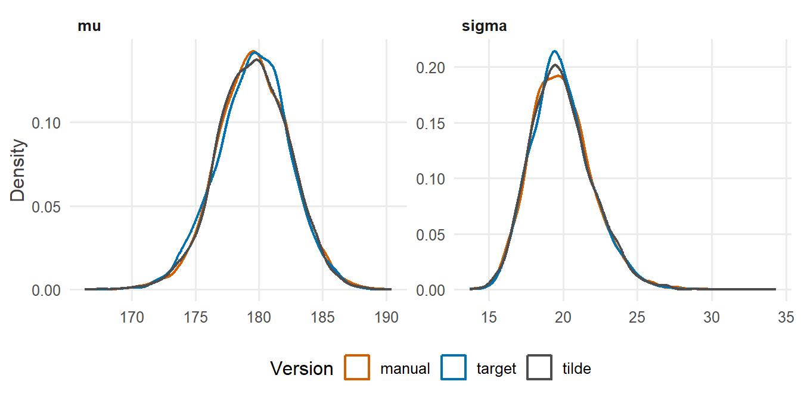

library(tidyverse)
library(cmdstanr)
library(posterior)
library(tidybayes)
source("R/theme.R")
source("R/utils.R")第 4 章 target += 与 ~
Stan 到底在计算什么？两种写法的区别在哪里？为什么一切都在对数尺度上进行？
几乎每一份 Stan 入门材料都从 y ~ normal(mu, sigma) 开始。这个写法读起来像是在说“\(y\) 服从正态分布”，非常直观。但它也容易让人误以为 Stan 在“抽取”什么，或者在做某种特殊的“声明”。
实际上，Stan 的 model 块只做一件事：计算一个数，即当前参数值下后验分布的对数密度（相差一个常数）。这个数存放在一个叫 target 的变量里。本章把这件事讲透。
1 本章要回答的问题
- Stan 到底在计算什么？输出中的
lp__是什么？ y ~ normal(mu, sigma)和target += normal_lpdf(y | mu, sigma)有什么区别？- 为什么在对数尺度上累加，而不是直接把概率相乘？
2 公式卡片
贝叶斯公式的对数形式
\[ \log p(\mu, \sigma \mid y) = \underbrace{\sum_{i=1}^{N} \log p(y_i \mid \mu, \sigma)}_{\text{log-likelihood}} + \underbrace{\log p(\mu) + \log p(\sigma)}_{\text{log-prior}} - \underbrace{\log p(y)}_{\text{constant}} \]
本章的具体模型：
\[ \begin{aligned} y_i &\sim \operatorname{Normal}(\mu,\ \sigma) \\ \mu &\sim \operatorname{Normal}(150,\ 50) \\ \sigma &\sim \operatorname{Exponential}(0.05) \end{aligned} \]
最后一项 \(\log p(y)\) 与参数无关，对采样来说是一个常数，可以忽略。model 块要做的，就是把前面几项逐项加起来。target += 这个写法把“逐项相加”字面地写了出来。
3 模拟数据
研究情境：称量某果园 50 个苹果的重量（克）。
set.seed(2026)
N <- 50
mu_true <- 180 # mean weight (g)
sigma_true <- 20 # SD of weight (g)
sim_data <- tibble(weight = round(rnorm(N, mu_true, sigma_true)))
stan_data <- list(N = nrow(sim_data), y = sim_data$weight)4 Stan 代码
同一个模型，三种写法。
写法一：~ 语句
model {
mu ~ normal(150, 50);
sigma ~ exponential(0.05);
y ~ normal(mu, sigma);
}写法二：target += 加 _lpdf 函数
model {
target += normal_lpdf(mu | 150, 50);
target += exponential_lpdf(sigma | 0.05);
target += normal_lpdf(y | mu, sigma);
}写法三：把正态分布的对数密度公式手工写出来
model {
// Priors
target += normal_lpdf(mu | 150, 50);
target += exponential_lpdf(sigma | 0.05);
// Likelihood, term by term
target += -N * log(sigma)
- 0.5 * N * log(2 * pi())
- 0.5 * dot_self((y - mu) / sigma);
}写法三直接来自正态分布的对数密度：
\[ \log \operatorname{Normal}(y_i \mid \mu, \sigma) = -\log\sigma - \tfrac{1}{2}\log(2\pi) - \tfrac{1}{2}\left(\frac{y_i - \mu}{\sigma}\right)^2 \]
对 \(N\) 个观测求和，就是代码中的三项。dot_self(v) 计算向量 \(v\) 各元素的平方和。
三个程序的 data 和 parameters 块完全相同，完整代码见 stan/ch04_tilde.stan、stan/ch04_target.stan 和 stan/ch04_manual.stan。
5 R 端运行
fit_three <- c(tilde = "tilde", target = "target", manual = "manual") |>
map(\(version) {
cmdstan_model(paste0("stan/ch04_", version, ".stan"))$sample(
data = stan_data, seed = 2026, chains = 4, parallel_chains = 4, refresh = 0
)
})#> Running MCMC with 4 parallel chains...
#>
#> Chain 1 finished in 0.0 seconds.
#> Chain 2 finished in 0.0 seconds.
#> Chain 3 finished in 0.0 seconds.
#> Chain 4 finished in 0.0 seconds.
#>
#> All 4 chains finished successfully.
#> Mean chain execution time: 0.0 seconds.
#> Total execution time: 0.4 seconds.
#>
#> Running MCMC with 4 parallel chains...
#>
#> Chain 1 finished in 0.0 seconds.
#> Chain 2 finished in 0.0 seconds.
#> Chain 3 finished in 0.0 seconds.
#> Chain 4 finished in 0.0 seconds.
#>
#> All 4 chains finished successfully.
#> Mean chain execution time: 0.0 seconds.
#> Total execution time: 0.3 seconds.
#>
#> Running MCMC with 4 parallel chains...
#>
#> Chain 1 finished in 0.0 seconds.
#> Chain 2 finished in 0.0 seconds.
#> Chain 3 finished in 0.0 seconds.
#> Chain 4 finished in 0.0 seconds.
#>
#> All 4 chains finished successfully.
#> Mean chain execution time: 0.0 seconds.
#> Total execution time: 0.3 seconds.6 后验整理与可视化
6.1 三种写法，同一个后验
fit_three |>
imap(\(fit, version) {
fit$summary(c("mu", "sigma", "lp__"), "mean", "sd") |> mutate(version = version)
}) |>
list_rbind() |>
pivot_wider(names_from = variable, values_from = c(mean, sd)) |>
select(version, mean_mu, sd_mu, mean_sigma, sd_sigma, mean_lp__) |>
knitr::kable(digits = 2)| version | mean_mu | sd_mu | mean_sigma | sd_sigma | mean_lp__ |
|---|---|---|---|---|---|
| tilde | 179.55 | 2.84 | 19.88 | 2.09 | -172.30 |
| target | 179.52 | 2.85 | 19.90 | 2.04 | -226.06 |
| manual | 179.58 | 2.83 | 19.89 | 2.09 | -226.07 |
fit_three |>
imap(\(fit, version) gather_draws(fit, mu, sigma) |> mutate(version = version)) |>
list_rbind() |>
ggplot(aes(x = .value, colour = version)) +
geom_density(linewidth = 0.8) +
facet_wrap(~ .variable, scales = "free") +
scale_colour_manual(values = c(tilde = "grey30", target = f2s_colors[["post"]],
manual = f2s_colors[["truth"]])) +
labs(x = NULL, y = "Density", colour = "Version")
\(\mu\) 和 \(\sigma\) 的后验在三种写法下没有差别（细微的不同来自随机抽样）。但 表 1 中的 lp__ 却不一样：target 写法和 manual 写法相同，tilde 写法要高出一截。
6.2 lp__ 到底是什么？
lp__ 是每一次抽样时 target 的最终值。我们可以在 R 端手工重算它。对 target 写法的每一组抽样 \((\mu^{(s)}, \sigma^{(s)})\)：
draws_target <- fit_three$target$draws(c("mu", "sigma", "lp__"), format = "df") |>
as_tibble()
lp_by_hand <- draws_target |>
rowwise() |>
mutate(
log_prior = dnorm(mu, 150, 50, log = TRUE) + dexp(sigma, 0.05, log = TRUE),
log_lik = sum(dnorm(stan_data$y, mu, sigma, log = TRUE)),
log_jacobian = log(sigma),
lp_without_jac = log_prior + log_lik,
lp_with_jac = log_prior + log_lik + log_jacobian
) |>
ungroup()
lp_by_hand |>
summarise(
max_diff_without_jacobian = max(abs(lp__ - lp_without_jac)),
max_diff_with_jacobian = max(abs(lp__ - lp_with_jac))
)#> # A tibble: 1 × 2
#> max_diff_without_jacobian max_diff_with_jacobian
#> <dbl> <dbl>
#> 1 3.36 0.00000855只有加上 log(sigma) 这一项，手算结果才与 Stan 的 lp__ 一致（剩下约 \(10^{-5}\) 的差别，来自 Stan 输出文件只保留 6 位有效数字）。这一项正是第 3 章讲过的雅可比调整：\(\sigma\) 声明了 <lower=0>，Stan 在 \(\log\sigma\) 上采样，并自动在 target 上加了 \(\log\sigma\)。
所以，lp__ = 对数先验 + 对数似然 + 雅可比项。它是无约束空间中的后验对数密度（相差一个常数）。
6.3 ~ 丢掉了什么？
再看 tilde 写法的 lp__。~ 语句会丢掉所有不依赖于参数的常数项。本模型中被丢掉的常数有三个：
- 先验 \(\operatorname{Normal}(\mu \mid 150, 50)\) 中的 \(-\tfrac{1}{2}\log(2\pi) - \log 50\)；
- 先验 \(\operatorname{Exponential}(\sigma \mid 0.05)\) 中的 \(\log 0.05\)；
- 似然中的 \(-\tfrac{N}{2}\log(2\pi)\)。
注意，似然中的 \(-N\log\sigma\) 没有被丢掉，因为它依赖于参数 \(\sigma\)。
dropped_constant <- (-0.5 * log(2 * pi) - log(50)) + log(0.05) + (-N / 2 * log(2 * pi))
dropped_constant#> [1] -53.77362用同样的方法手算 tilde 写法的 lp__，再减去这个常数：
fit_three$tilde$draws(c("mu", "sigma", "lp__"), format = "df") |>
as_tibble() |>
rowwise() |>
mutate(
lp_full = dnorm(mu, 150, 50, log = TRUE) + dexp(sigma, 0.05, log = TRUE) +
sum(dnorm(stan_data$y, mu, sigma, log = TRUE)) + log(sigma)
) |>
ungroup() |>
summarise(max_diff = max(abs(lp__ - (lp_full - dropped_constant))))#> # A tibble: 1 × 1
#> max_diff
#> <dbl>
#> 1 0.0000104完全吻合。~ 与 target += 的 lp__ 相差的正是这个常数 -53.77。
7 为什么这样写
7.1 Stan 到底在计算什么？
model 块是一个函数：输入一组参数值，输出一个数 target。采样器需要的只有两样东西：
- 这个数本身：当前位置的后验密度有多高；
- 这个数对每个参数的梯度：往哪个方向走，密度会升高或降低。
Stan 用自动微分从 model 块的代码中自动得到梯度。所以，model 块里写的每一行，本质上都是在往 target 上累加一项。~ 语句也不例外：
y ~ normal(mu, sigma);等价于
target += normal_lupdf(y | mu, sigma);其中 _lupdf 表示“去掉常数项的对数密度”（u 代表 unnormalized）。
7.2 丢掉常数会影响结果吗？
不影响后验。常数项不依赖参数，对梯度没有贡献，也不改变不同位置之间密度的相对高低。所以 图 1 中三种写法的后验完全一样。
丢掉常数还能省一点计算。对于正态分布，省掉的只是 \(\log(2\pi)\) 这样的常数；对于某些分布（比如 Student-t 中依赖固定自由度的 Gamma 函数项），省下的计算更多一些。
那什么时候常数重要？当你需要 target 本身的绝对数值时。例如：
- 用桥抽样（bridge sampling）估计边际似然、计算贝叶斯因子；
- 把
lp__当作某种绝对指标来比较不同模型。
这些情况下必须使用完整的 _lpdf，否则不同模型丢掉的常数不同，比较就失去了意义。注意，lp__ 一般不应该直接用来比较模型，模型比较应当使用 log_lik 加 LOO 等方法。
7.3 为什么本系列统一使用 target +=？
透明：
target += normal_lpdf(y | mu, sigma)字面地说出了 Stan 在做什么，即把对数似然加到目标上。~则容易让人误以为 Stan 在“抽样”或“声明分布”。完整：
_lpdf保留常数项，lp__是完整的对数密度（相差的只有 \(\log p(y)\)），手算可以逐项核对，就像本章所做的那样。通用：有些模型的对数密度无法写成“某个变量服从某个分布”的形式。最典型的是混合模型（第 15 章）：
target += log_sum_exp(log(lambda) + normal_lpdf(y[i] | mu1, sigma), log1m(lambda) + normal_lpdf(y[i] | mu2, sigma));这里左边没有一个“服从”某分布的变量，只能用
target +=。
~ 并不是错误写法。在 Stan 官方文档和很多教材中都广泛使用，读到时把它理解为“去掉常数的 target +=”即可。
7.4 为什么在对数尺度上累加？
似然是 \(N\) 个概率密度的乘积。每个密度通常小于 1，乘起来会非常快地趋近于 0：
set.seed(2026)
y_big <- rnorm(1000, mu_true, sigma_true)
c(
product_of_densities = prod(dnorm(y_big, mu_true, sigma_true)),
sum_of_log_densities = sum(dnorm(y_big, mu_true, sigma_true, log = TRUE))
)#> product_of_densities sum_of_log_densities
#> 0.000 -4404.4541000 个观测的密度乘积在计算机中已经下溢为 0：它真实的值约为 \(e^{-4404}\)，远小于双精度浮点数能表示的最小正数（约 \(10^{-308}\)）。一旦变成 0，不同参数值之间就无法比较，梯度也无从计算。
取对数之后：
- 乘积变成了求和，数值稳定，不会下溢；
- 很多分布的对数密度形式更简单（正态分布的对数密度就是一个二次函数）；
- 求和的梯度就是各项梯度之和，自动微分更高效。
这也是为什么 Stan 中所有分布函数都以 _lpdf（log probability density function）或 _lpmf（log probability mass function）结尾。
8 常见错误
| 错误写法 | 后果 | 正确写法 |
|---|---|---|
target = normal_lpdf(...) |
编译错误：target 只能用 += 累加 |
target += normal_lpdf(...) |
y ~ normal_lpdf(mu, sigma) |
编译错误：~ 后面写分布名，不带后缀 |
y ~ normal(mu, sigma) |
target += normal(y | mu, sigma) |
编译错误：target += 后面需要对数密度函数 |
target += normal_lpdf(y | mu, sigma) |
同时写 y ~ normal(...) 和 target += normal_lpdf(y | ...) |
能运行，但似然被计算两次，后验过窄 | 两种写法只保留一种 |
| 忘记写似然 | 能运行，没有任何报错，但得到的是先验 | 检查 model 块中是否每个观测变量都出现在似然里 |
用 lp__ 比较不同模型 |
不同模型丢掉的常数和雅可比项不同，比较没有意义 | 用 log_lik 与 LOO 比较模型 |
9 练习
练习 1 手算一次 lp__
从 target 写法的抽样中任取一行，用 R 逐项计算对数先验、对数似然和雅可比项，验证三者之和等于该行的 lp__。
提示参考答案
one_draw <- draws_target |> slice(1)
log_prior <- dnorm(one_draw$mu, 150, 50, log = TRUE) +
dexp(one_draw$sigma, 0.05, log = TRUE)
log_lik <- sum(dnorm(stan_data$y, one_draw$mu, one_draw$sigma, log = TRUE))
log_jacobian <- log(one_draw$sigma)
c(
by_hand = log_prior + log_lik + log_jacobian,
stan = one_draw$lp__
)#> by_hand stan
#> -226.0252 -226.0252两者相等。能够手算 lp__，说明你确切地知道 Stan 在计算什么。
练习 2 似然算了两次会怎样？
stan/ch04_ex2_double.stan 中，似然既用 ~ 写了一次，又用 target += 写了一次。运行它，与正确模型比较 \(\mu\) 的后验标准差。
提示参考答案
model {
target += normal_lpdf(mu | 150, 50);
target += exponential_lpdf(sigma | 0.05);
y ~ normal(mu, sigma); // likelihood ...
target += normal_lpdf(y | mu, sigma); // ... added again
}fit_double <- cmdstan_model("stan/ch04_ex2_double.stan")$sample(
data = stan_data, seed = 2026, chains = 4, parallel_chains = 4, refresh = 0
)#> Running MCMC with 4 parallel chains...
#>
#> Chain 1 finished in 0.0 seconds.
#> Chain 2 finished in 0.0 seconds.
#> Chain 3 finished in 0.0 seconds.
#> Chain 4 finished in 0.0 seconds.
#>
#> All 4 chains finished successfully.
#> Mean chain execution time: 0.0 seconds.
#> Total execution time: 0.3 seconds.bind_rows(
fit_three$target$summary("mu", "mean", "sd") |> mutate(model = "correct"),
fit_double$summary("mu", "mean", "sd") |> mutate(model = "likelihood twice")
)#> # A tibble: 2 × 4
#> variable mean sd model
#> <chr> <dbl> <dbl> <chr>
#> 1 mu 180. 2.85 correct
#> 2 mu 180. 2.00 likelihood twice似然算了两次，相当于把每个观测复制了一份，数据量“翻倍”。\(\mu\) 的后验标准差缩小到原来的约 \(1/\sqrt{2}\)。程序没有任何报错，结论却过于自信。这类错误只能靠理解 target 的含义来避免。
练习 3 手写指数分布的对数密度
指数分布的密度是 \(p(\sigma \mid \lambda) = \lambda e^{-\lambda\sigma}\)。请不用 exponential_lpdf，手工写出 \(\sigma \sim \operatorname{Exponential}(0.05)\) 对应的 target += 语句。
提示参考答案
取对数：\(\log p(\sigma \mid \lambda) = \log\lambda - \lambda\sigma\)。所以
target += log(0.05) - 0.05 * sigma;如果写成 target += -0.05 * sigma;，就相当于 sigma ~ exponential(0.05)：常数 \(\log 0.05\) 被丢掉了，后验不变，lp__ 相差 \(\log 0.05\)。
练习 4 lp__ 的分布说明了什么？
lp__ 也有后验分布。为什么它不是“越高越好”？为什么不能用 lp__ 的平均值来比较两个模型？
提示参考答案
lp__ 是每次抽样所在位置的（未归一化）后验对数密度。后验抽样的目的是按密度比例探索整个分布，而不是寻找最高点，所以抽样中会有很多 lp__ 较低的点，这正说明采样器在探索分布的“体积”，而不只是停在峰顶。
不能用它比较模型，原因有三：(1) 不同写法会丢掉不同的常数；(2) 雅可比项取决于参数化方式，同一个模型换一种参数化，lp__ 就变了；(3) 即使包含全部常数，它也缺少 \(\log p(y)\)，而不同模型的 \(\log p(y)\) 不同。比较模型应当使用基于 log_lik 的 LOO 等方法 (Vehtari 等, 2017)。
10 小结
model块计算的是一个数：target，即后验对数密度（相差一个常数）。输出中的lp__就是它。lp__= 对数先验 + 对数似然 + 约束变换的雅可比项。本章在 R 端逐项重算，与 Stan 完全一致。y ~ dist(...)等价于target += dist_lupdf(y | ...)：丢掉常数项，后验不变，lp__平移一个常数。- 一切都在对数尺度上进行：乘积变求和，避免下溢，梯度计算更简单。
- 本系列统一使用
target +=，因为它透明、完整，并且能写出~写不出的模型。
11 延伸
- 下一章：第 5 章 线性回归：公式逐行变代码，把本章的写法用到第一个回归模型上。
target +=最能显示威力的地方是边缘化离散变量，见第 15 章。
12 参考资料
- Stan Reference Manual 的 Statements 一章说明了
~语句与target +=语句的语义，以及常数项的处理方式 (Stan Development Team, 2026b)。 - Stan Functions Reference 开头关于
_lpdf、_lupdf等后缀约定的说明 (Stan Development Team, 2026a)。 - 自动微分与 HMC 如何使用对数密度的梯度，见 Betancourt (2017)。
- 用
log_lik做模型比较的方法见 Vehtari 等 (2017)。
Betancourt, M. (2017). A Conceptual Introduction to Hamiltonian Monte Carlo. https://arxiv.org/abs/1701.02434
Stan Development Team. (2026a). Stan Functions Reference (Version 2.40). https://mc-stan.org/docs/functions-reference/
Stan Development Team. (2026b). Stan Reference Manual (Version 2.40). https://mc-stan.org/docs/reference-manual/
Vehtari, A., Gelman, A., & Gabry, J. (2017). Practical Bayesian Model Evaluation Using Leave-One-Out Cross-Validation and WAIC. Statistics and Computing, 27(5), 1413～1432. https://doi.org/10.1007/s11222-016-9696-4